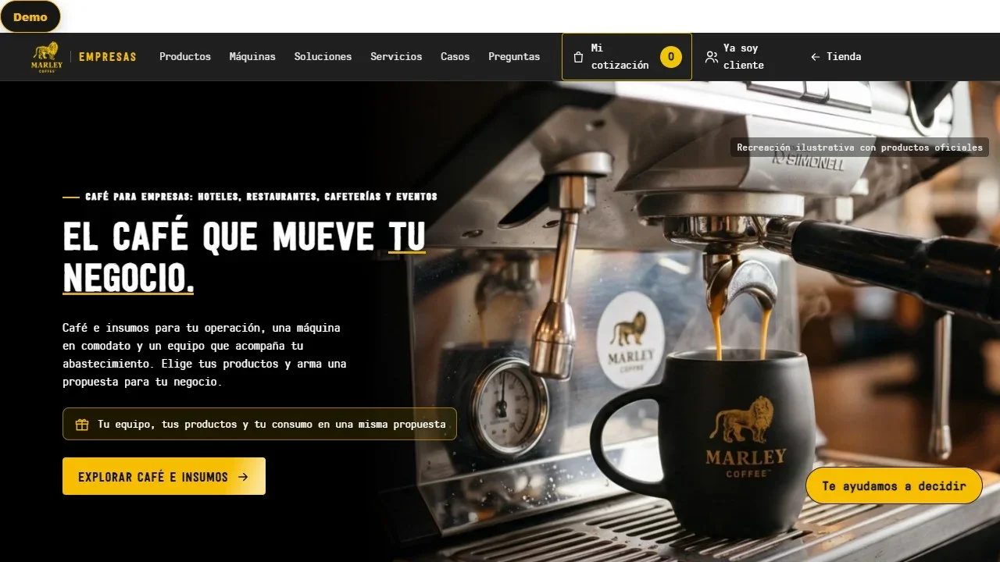

ENSUTEX
01 / PROPIO
EMPRENDIMIENTO PROPIO · 117 PEDIDOS REGISTRADOS (MAR 2025–JUL 2026)
Diseñar un recorrido de compra claro
Cotización en 4 pasos, guías de tallas y consultas de web y correo reunidas en una bandeja única.
CARLOS VARGAS / ANÁLISIS DE EXPERIENCIA · DISEÑO UX/UI · MARKETING DIGITAL
Técnico en Marketing Digital (2024) · Ingeniería en Marketing Digital, Duoc UC · titulación: diciembre de 2026
Entiendo qué necesitan las personas y dónde encuentran dificultades. Con ese análisis, diseño interfaces y organizo información para que clientes y equipos puedan avanzar con claridad.
EL ENFOQUE
Analizo el recorrido de compra y atención para reconocer qué necesita cada persona y dónde aparece la fricción. El diseño de la interfaz y la organización diaria del equipo forman parte de una misma experiencia.
TRABAJO SELECCIONADO
Cuatro contextos muestran análisis de experiencia, diseño UX/UI y decisiones basadas en información de proyectos propios, de cliente y académicos.
EMPRENDIMIENTO PROPIO · 117 PEDIDOS REGISTRADOS (MAR 2025–JUL 2026)
Diseñar un recorrido de compra claro
Cotización en 4 pasos, guías de tallas y consultas de web y correo reunidas en una bandeja única.

CLIENTE · TEMPORADA 2026 · MÁS DE 80 ARRIENDOS
La demanda ya estaba. Había que ordenar la experiencia y la operación
Consulta guiada en 5 pasos, panel en 4 vistas y 93 documentos generados al 19 de agosto de 2026.

PROYECTO DE TÍTULO · INFORME Y PROTOTIPO
De un catálogo de café a un recorrido B2B centrado en los insumos
Prototipo UX evaluado con los 10 principios de Nielsen y probado con usuarios en móvil.

MARCA PROPIA EN PREPARACIÓN · PEDIDOS PERSONALIZADOS
Entender una nueva motivación de compra sobre una operación que ya existe
Universos de interés y un recorrido UX para cotizar una prenda personalizada.
MÉTODO DE ANÁLISIS
Observo la experiencia de principio a fin: lo que necesitan las personas, dónde aparecen dificultades y cómo responde el equipo. Con esa evidencia priorizo mejoras y evalúo las propuestas.
PERSONAS · CONTEXTO
RECORRIDO · EVIDENCIA
CRITERIO · DECISIÓN
EXPERIENCIA · UX/UI
APRENDIZAJE · AJUSTE
Cada proyecto muestra cómo apliqué este enfoque en un contexto distinto.
CÓMO TRABAJO
Cada proyecto parte de la experiencia real. El análisis orienta el diseño de la interfaz y la evaluación de la propuesta según la evidencia disponible.
Escucho y observo para entender qué necesitan las personas y cómo viven el recorrido.
ENSUTEX ↗Identifico las dudas, obstáculos y tareas que dificultan el avance de las personas y del equipo.
SOL Y TIERRA ↗Organizo información y flujos para facilitar la consulta del cliente y las tareas del equipo.
VER SITIO Y PANEL ↗Reviso la propuesta con datos y pruebas de usabilidad, según la evidencia disponible.
MARLEY COFFEE ↗CRITERIO Y REVISIÓN
Defino el problema, priorizo la información y reviso la propuesta antes de aplicar cambios. Los datos respaldan el diagnóstico; el criterio profesional orienta la decisión.
CÓMO USO LAS HERRAMIENTAS ↗PRUEBAS EN PANTALLA
Recorridos reales del sitio y de las herramientas internas. Cada caso dice qué está en uso y qué es demostración.
PERFIL
Soy Técnico en Marketing Digital (titulado en 2024 con distinción académica en mi práctica profesional) y curso el último semestre de Ingeniería en Marketing Digital en Duoc UC (marzo de 2023 – diciembre de 2026). Forjé mi liderazgo nato y el manejo de equipos durante 10 años como director artístico y profesor de danza, guiando grupos diversos bajo presión. Me mueve el aprendizaje autodidacta continuo: me gusta investigar cómo funciona cada herramienta por dentro para lograr soluciones claras y efectivas. Inglés básico-intermedio.
Mi proceso en UX/UI y Experiencia de Cliente (CX) parte siempre por escuchar y empatizar con las personas mediante el Mapa de Empatía y el Modelo Canvas. Con ese diagnóstico diseño los flujos de usuario (User Flows) y el recorrido de compra o atención (Customer Journey) en contextos B2B y B2C, aplicando reglas de UX —jerarquía visual, arquitectura de información, sistemas de diseño (Design Systems), evaluación heurística de Nielsen y accesibilidad web (contraste AA, foco visible y semántica HTML)— en trabajo colaborativo e iteraciones ágiles.
En la ejecución del código y la maquetación web (HTML y CSS), trabajo con total franqueza apoyándome en inteligencia artificial generativa (Claude, Codex y Gemini): yo defino el problema, la empatía con el usuario, los flujos y las jerarquías visuales, y reviso cada resultado antes de aplicarlo.
LO QUE SÉ HACER
Análisis, experiencia de cliente, diseño UX/UI y habilidades blandas respaldados por casos aplicados, liderazgo de grupos y proyecto de título.
HERRAMIENTAS Y FORMACIÓN
Me interesa entender cómo funciona cada herramienta por dentro para que el resultado sea efectivo. Las herramientas aplicadas aparecen separadas de la práctica y formación académica.
Analítica digital utilizada para revisar la actividad y el comportamiento en los proyectos.
ENSUTEX ↗Herramientas para observar consultas de búsqueda, mapas de calor y grabaciones de sesión.
ENSUTEX ↗Herramienta de diseño visual utilizada en proyectos de producción gráfica.
ENSUTEX ↗Herramienta complementaria en la organización de flujos y avisos de atención.
SOL Y TIERRA ↗Gestión de canales comerciales, contenido y atención en redes sociales.
ENSUTEX ↗Conocimiento aplicado al contexto de atención comercial y seguimiento digital.
ENSUTEX ↗Práctica académica en etiquetado y campañas de búsqueda; separada de la experiencia laboral.
MARLEY COFFEE ↗Práctica académica en campañas de pago, Email Marketing y flujos de trabajo.
MARLEY COFFEE ↗Práctica académica en diseño de wireframes, prototipado UX/UI y pruebas con usuarios.
MARLEY COFFEE ↗Formación de la carrera reforzada con estudio autodidacta y aplicada en la estructura de los sitios.
PERFIL ↗Organización de registros de pedidos, control de temporada y seguimiento de clientes sin duplicados.
SOL Y TIERRA ↗Ejecución de código HTML/CSS apoyada en Claude, Codex y Gemini bajo revisión humana; manejo funcional de Illustrator, Photoshop y Premiere.
PERFIL ↗CONTACTO / OPORTUNIDADES PROFESIONALES
Soy Técnico en Marketing Digital y curso el último semestre de Ingeniería en Marketing Digital en Duoc UC. Busco oportunidades en Marketing Digital, Experiencia de Cliente (CX) y Diseño UX/UI, en Santiago o modalidad remota; también realizo proyectos freelance.
CARLOS VARGAS · SANTIAGO, CHILE